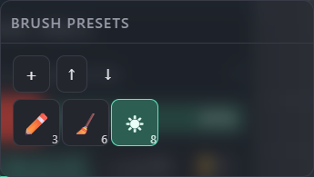
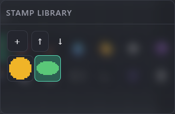
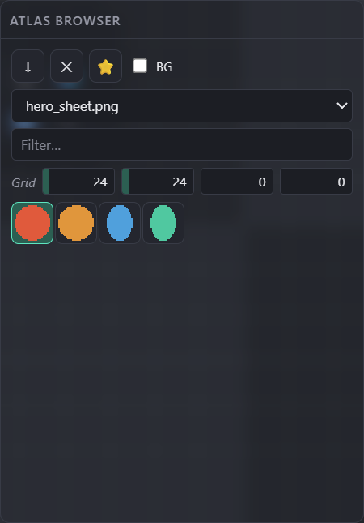

Panels
Presets & Atlas
Two small preset libraries — Brush presets and the Stamp library — plus the Atlas browser, which turns an imported sprite sheet into a searchable grid of ready-to-stamp sprites.
← Interface overviewBrush presets
Snapshots of a tool's full settings — size, shape, color, alpha — one click to reapply. Every brush-capable tool can be saved except Stamp, which has its own library below.

Captures the active tool's full settings (size, shape, spacing, strength, color, alpha) as a new preset.
Save the whole library to a JSON file, or load one back in — for sharing a brush set between projects or machines.
Icon = the tool it belongs to; the number badge is that preset's brush size. Click applies it (switches tool + restores every saved setting).
Stamp library
Saved pixel blocks instead of settings — crop a selection or the whole canvas, then reuse it as a stamp anywhere, in any project.

Bakes the active pixel selection (or, with none, the whole canvas) into a stamp, cropped to its opaque bounds.
Same JSON round-trip as Brush presets, kept as a separate file/library.
Click selects it as the current stamp brush. Drag it straight onto the canvas to place a copy without switching tools first.
Atlas browser
Import a sprite sheet (TexturePacker, Aseprite, LibGDX/Spine, Unity, Godot, a Pixis sheet, or a plain uniform grid) and every sprite becomes a searchable, stampable tile.

Opens File → Sprite atlas… — pick the sheet image (+ its JSON/.atlas/.plist/.tres metadata where the format needs one).
Drops the active atlas from this session (import is session-only — nothing is written to the project).
Promotes the selected sprite into the Stamp library above, so it survives after the atlas is removed.
Strips a flat background color from each sprite on import (useful for sheets exported without alpha).
Switch between several imported atlases; filter sprites by name, tag or #rrggbb; Grid W/H/margin/spacing is only used for a plain image with no metadata (uniform-grid import).
Click a tile to activate it as the current stamp brush (equivalent to selecting Stamp + that pixel block) — pixels are extracted lazily, on first view.
Gestures & shortcuts
- Click — apply / activate
- Drag — reorder within its library
- Hold (~500ms) — remove
- Right-click — assign a hotkey to that specific preset
- Drag onto the canvas — places a copy there directly, restoring the previous tool afterward
- Click — activate as the current stamp brush
- ⭐ toolbar button — copy it into the permanent Stamp library
- Brush/Stamp libraries persist locally and travel with Export/Import.
- Atlas imports are session-only — reload the page and they're gone (promote anything worth keeping to the Stamp library first).